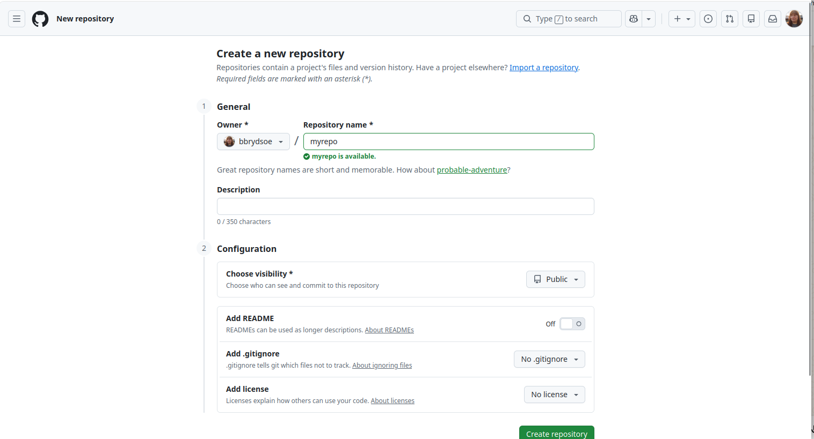
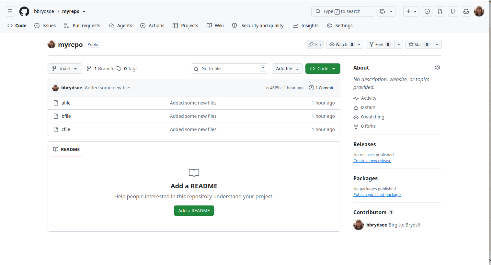
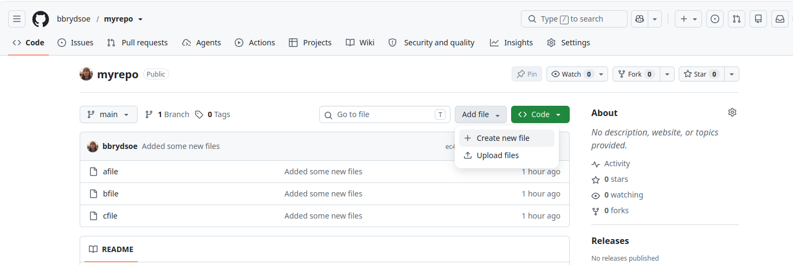
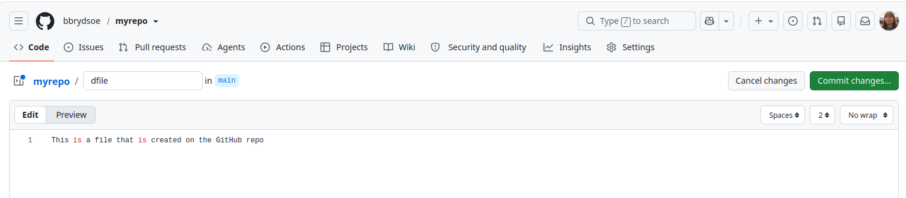
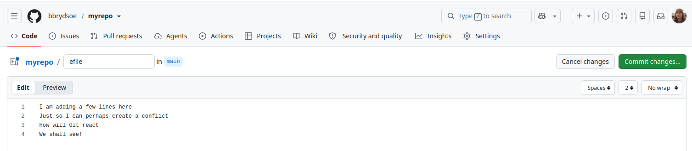
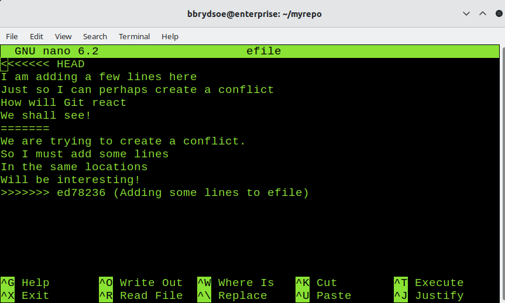

Model solutions for Extra exercises¶
These exercises are meant as extra (optional) training and can be done either during classes if there is time, or later.
On your own¶
These exercises can be done on your own.
- Create a repository from the command line:
- Initialize a repository from the command line.
- Create a file or two.
- Add the file(s) and commit them.
- Use
git logandgit statusto see what has happened. - Answer:
Since GitHub uses
git init myrepo hint: Using 'master' as the name for the initial branch. This default branch name hint: is subject to change. To configure the initial branch name to use in all hint: of your new repositories, which will suppress this warning, call: hint: hint: git config --global init.defaultBranch <name> hint: hint: Names commonly chosen instead of 'master' are 'main', 'trunk' and hint: 'development'. The just-created branch can be renamed via this command: hint: hint: git branch -m <name> Initialized empty Git repository in /home/bbrydsoe/myrepo/.git/maininstead ofmasteryou have to either rename the repo here or in GitHub. Let us do it here: Create files. Add the files, commit them. Check withgit logandgit status:$ touch afile $ touch bfile $ touch cfile $ git add afile bfile cfile $ git commit -m "Added some new files" [main (root-commit) ec46f5b] Added some new files 3 files changed, 0 insertions(+), 0 deletions(-) create mode 100644 afile create mode 100644 bfile create mode 100644 cfile $ git log commit ec46f5b152cbf5059a73bf7554db235b50290c09 (HEAD -> main) Author: Birgitte Brydsö <bbrydsoe@hpc2n.umu.se> Date: Sun Sep 27 16:03:16 2026 +0200 Added some new files $ git status On branch main nothing to commit, working tree clean
- Create a new, empty repository on GitHub with the same name (do not add README or .gitignore). Instead, on the new page of creation, connect to the local repo (… or push an existing repository from the command lines). Just copy the commands from there to your command line.
NOTE You need to have setup SSH keys on GitHub first. If not, do so as described here: https://hpc2n.github.io/bioinformatics-hpc/07.Git/teamwork/#2__creating__and__using__ssh-keys
- Answer:

Click “Create repository” (green button at bottom) Now pick the option “…or push an existing repository from the command line”. For my example, I would do (line 2 is already done):
- Answer:
- See on GitHub that your repository now contains what you had in your local repository. Do
git statuson the command line and compare what it says now.- Answer:

- Answer:
- Create a minor conflict and resolve it with
git pull --rebase- Create a new file on GitHub. Save/commit.
- On the command line, create a new file. Stage, commit, and push. Git complains!
- Solve the problem with
git pull --rebaseandgit push - Answer:

Click the “Create new file” under “Add file”
Click “Commit changes …” Go to command line:bash $ touch efile bbrydsoe@enterprise:~/myrepo$ git add efile bbrydsoe@enterprise:~/myrepo$ git commit -m "Creating one more file" [main 0b8008e] Creating one more file 1 file changed, 0 insertions(+), 0 deletions(-) create mode 100644 efile bbrydsoe@enterprise:~/myrepo$ git push To github.com:bbrydsoe/myrepo.git ! [rejected] main -> main (fetch first) error: failed to push some refs to 'github.com:bbrydsoe/myrepo.git' hint: Updates were rejected because the remote contains work that you do hint: not have locally. This is usually caused by another repository pushing hint: to the same ref. You may want to first integrate the remote changes hint: (e.g., 'git pull ...') before pushing again. hint: See the 'Note about fast-forwards' in 'git push --help' for details. $ git pull --rebase remote: Enumerating objects: 4, done. remote: Counting objects: 100% (4/4), done. remote: Compressing objects: 100% (3/3), done. remote: Total 3 (delta 1), reused 0 (delta 0), pack-reused 0 (from 0) Unpacking objects: 100% (3/3), 979 bytes | 979.00 KiB/s, done. From github.com:bbrydsoe/myrepo ec46f5b..1b84667 main -> origin/main Successfully rebased and updated refs/heads/main. bbrydsoe@enterprise:~/myrepo$ git push Enumerating objects: 3, done. Counting objects: 100% (3/3), done. Delta compression using up to 4 threads Compressing objects: 100% (2/2), done. Writing objects: 100% (2/2), 279 bytes | 279.00 KiB/s, done. Total 2 (delta 1), reused 0 (delta 0), pack-reused 0 remote: Resolving deltas: 100% (1/1), completed with 1 local object. To github.com:bbrydsoe/myrepo.git 1b84667..f1861ee main -> main
- Create a conflict and try to resolve it:
- Either make changes to the same file in the same place on both GitHub and your repo on the command line or clone the repo somewhere else and make the changes in both local copies of the repo (this imitates the situation where you work on the files from home/your laptop and from your office desktop/laptop. Do not pull the new changes in either place before making new changes (bad idea!)
- Now try and push in both places. Git will complain when you try to push in the second location. Git will say there are diverging branches.
- Can it be resolved with
git pull --rebase? Probably not. Try it anyway. There is now a conflict. Find the conflict markers in the file you changed in both locations, decide how it should look and edit to suit. Remove conflict markers. Save. Add, commit, push. - Did Git allow you to push? Did it say you are not currently on a branch? (Detached head). You must then do
git push origin HEAD:main - Answer:
- Here making changes to the same file in the same place on command line and on gitHub:
- First edit the file (here
efile) on GitHub: Click the file. Chose the pen to edit. Commit changes … (green button) afterwards. I added four lines.
- Now edit the same file on the command line, without pulling first.
 This means we now have to try and resolve the conflict. Let us first pull:
This means we now have to try and resolve the conflict. Let us first pull:$ git add efile $ git commit -m "Adding some lines to efile" [main ed78236] Adding some lines to efile 1 file changed, 4 insertions(+) $ git push To github.com:bbrydsoe/myrepo.git ! [rejected] main -> main (fetch first) error: failed to push some refs to 'github.com:bbrydsoe/myrepo.git' hint: Updates were rejected because the remote contains work that you do hint: not have locally. This is usually caused by another repository pushing hint: to the same ref. You may want to first integrate the remote changes hint: (e.g., 'git pull ...') before pushing again. hint: See the 'Note about fast-forwards' in 'git push --help' for details.Let us try the rebase then:$ git pull remote: Enumerating objects: 5, done. remote: Counting objects: 100% (5/5), done. remote: Compressing objects: 100% (3/3), done. remote: Total 3 (delta 1), reused 0 (delta 0), pack-reused 0 (from 0) Unpacking objects: 100% (3/3), 1013 bytes | 1013.00 KiB/s, done. From github.com:bbrydsoe/myrepo f1861ee..bb236f3 main -> origin/main hint: You have divergent branches and need to specify how to reconcile them. hint: You can do so by running one of the following commands sometime before hint: your next pull: hint: hint: git config pull.rebase false # merge (the default strategy) hint: git config pull.rebase true # rebase hint: git config pull.ff only # fast-forward only hint: hint: You can replace "git config" with "git config --global" to set a default hint: preference for all repositories. You can also pass --rebase, --no-rebase, hint: or --ff-only on the command line to override the configured default per hint: invocation. fatal: Need to specify how to reconcile divergent branches.Let us look at the file:$ git pull --rebase Auto-merging efile CONFLICT (content): Merge conflict in efile error: could not apply ed78236... Adding some lines to efile hint: Resolve all conflicts manually, mark them as resolved with hint: "git add/rm <conflicted_files>", then run "git rebase --continue". hint: You can instead skip this commit: run "git rebase --skip". hint: To abort and get back to the state before "git rebase", run "git rebase --abort". Could not apply ed78236... Adding some lines to efileNow we need to edit the file. I am doing so with$ cat efile <<<<<<< HEAD I am adding a few lines here Just so I can perhaps create a conflict How will Git react We shall see! ======= We are trying to create a conflict. So I must add some lines In the same locations Will be interesting! >>>>>>> ed78236 (Adding some lines to efile)nano:
We edit the file to have the content we want (I decide I want to keep the content and just remove the conflict markers). It looks like this:
We now add, commit, and pushDid you notice the comment about “detached head”? We must fix that:$ git add efile bbrydsoe@enterprise:~/myrepo$ git commit -m "Fixing the conflict" [detached HEAD 6adbfea] Fixing the conflict 1 file changed, 8 insertions(+), 4 deletions(-) bbrydsoe@enterprise:~/myrepo$ git push fatal: You are not currently on a branch. To push the history leading to the current (detached HEAD) state now, use git push origin HEAD:<name-of-remote-branch>$ git push origin HEAD:main Enumerating objects: 5, done. Counting objects: 100% (5/5), done. Delta compression using up to 4 threads Compressing objects: 100% (3/3), done. Writing objects: 100% (3/3), 406 bytes | 406.00 KiB/s, done. Total 3 (delta 1), reused 0 (delta 0), pack-reused 0 remote: Resolving deltas: 100% (1/1), completed with 1 local object. To github.com:bbrydsoe/myrepo.git bb236f3..6adbfea HEAD -> main

Teamwork¶
Together in a team.
- Setup:
- One of you create a repository. Either as in the section “On your own” or directly on GitHub.
- That person also adds some files.
- In “Settings” along the top in the repository on GitHub, the owner of the repository goes to “Collaborators” and there add the team members as maintainers or developers. What is the difference? Do they need the right to create branches?
- The members accept the invite.
- Each of the other team members now clone this repository. (Green code button -> under SSH, copy the url, do
git clone repo-url) - All members (including the owner) now make some changes. To begin with, make sure to do
git pull --rebasefirst to get any changes the orhers have made. Regularly see the changes that happens locally and in the GitHub remote repository. Check withgit statusandgit log. - Some/all create their own branch. Make some directories and files. Add some content to the files. Stage/commit/push. Check how it looks.
- Fetch each others branches.
- Try and merge some branches to main. Try and merge after having created a file and not having added/committed it. What happens? How do you resolve it?
- Create more branches. Make sure you have some files that are named the same and in the same location in the branches. Two should then make changes to the same file in the same location in it. Try and merge the branches. Will Git complain?
- If you got a conflict, try and resolve it and then continue the merge.